Técnico Multimídia

Projeto Integrador Produção e Design para Webgames
O Projeto Integrador é uma Unidade Curricular de Natureza Diferenciada, baseada na metodologia de ação-reflexão-ação, que se constitui na proposição de situações desafiadoras a serem cumpridas pelo aluno.
O planejamento e execução do Projeto Integrador propiciam a articulação das competências previstas no perfil profissional de conclusão do curso, pois apresenta ao aluno situações que estimulam o seu desenvolvimento profissional ao ter que decidir, opinar e debater com o grupo a resolução de problemas a partir do tema gerador.
Os 5 R's da reciclagem
Os 5 Rs da reciclagem, ou da sustentabilidade, são: Repensar, Recusar, Reduzir, Reutilizar e Reciclar. Essa política visa diminuir a geração de resíduos, incentivando mudanças de hábitos no consumo e no descarte.
Os 5 R’s ajudam a reduzir nosso impacto ambiental:
1 - Repensar:
Pensar antes de consumir: 'Eu preciso disso?'
Evite imprimir se pode enviar digitalmente.
Leve lanche de casa e evite embalagens descartáveis.
Comprar frutas sem isopor.
2 - Reduzir:
Diminuir a quantidade de lixo que produzimos.
Use garrafinha reutilizável ao invés de plásticas.
Prefira canetas recarregáveis e reutilize folhas como rascunho
3 - Reutilizar:
Dar novo uso ao que seria descartado.
Transforme cadernos antigos em blocos de anotação.
Crie organizadores com caixas e potes recicláveis.
Troque livros e uniformes entre colegas.
Caixa de papelão vira casa de gatos.
Roupas, troque, revenda, doe.
4 - Reciclar:
Separar corretamente o lixo reciclável.
Tenha lixeira separada para papel na sala.
Leve pilhas e baterias a postos de coleta.
Participe de projetos de reciclagem da escola.
5 - Reusar:
Evitar produtos com muito plástico ou descartáveis.
Use copo reutilizável em vez de descartável.
Recuse folhetos que não vai ler.
Evite produtos com embalagens excessivas.
Projeto Integrador
Este webgame é o meu projeto integrador. Como todo trabalho que desenvolvemos no curso ele tem início, meio e fim. Passamos por várias etapas e aprendemos vários conhecimentos, não só nessa qualificação, mas todas as outras fazem parte do processo para chegar até aqui.
Fases de Toriz por Beatriz
Acesse o jogo com este link: Fases de Toriz
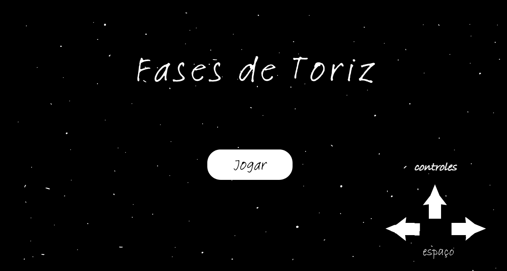
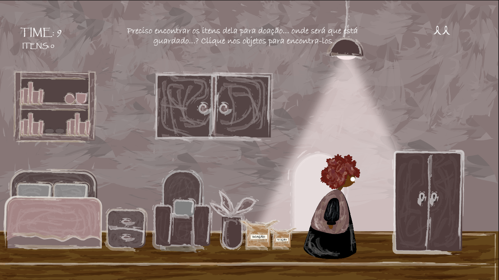
História - Fases de Toriz
Depois que perdeu sua mãe, o mundo de Toriz perdeu a cor. Na psicologia, o luto é uma jornada dividida em fases — como a negação, a raiva, a confusão, a depressão e a aceitação. Nesta história, o destino de Toriz está nas suas mãos. Guie-a através dessa tempestade emocional e ajude-a a encontrar o caminho da aceitação antes que a escuridão da depressão a consuma por completo.
Salve a Terra
Acesse o jogo com este link: Salve a Terra
Nesse jogo você vai aprender onde descartar cada tipo de resíduo na lixeira correta durante o caminho para salvar a Terra.
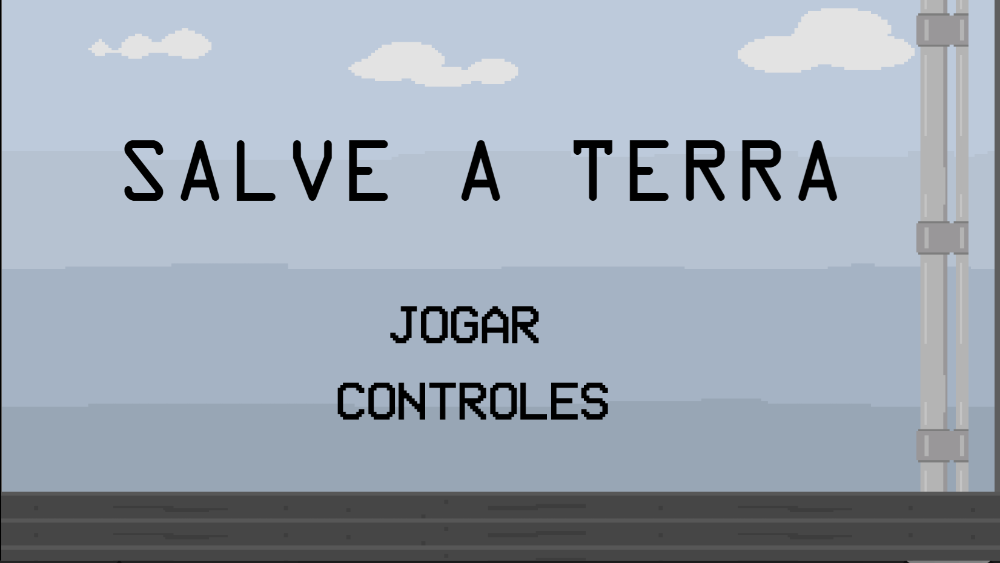
A Ilha Perdida por Carlos
Acesse o jogo com este link: A Ilha Perdida
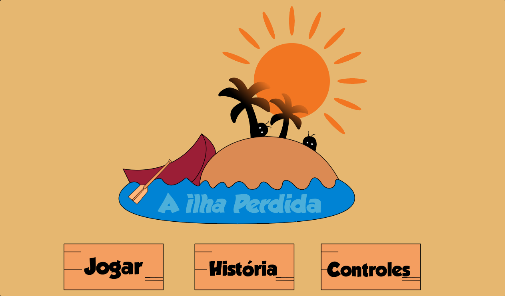
História - A Ilha Perdida
Os dois irmãos estavam passando as férias na fazenda do padrinho, curiosos sobre uma misteriosa ilha no Rio Paraíba do Sul, decidiram explorá-la. Pegaram uma canoa velha que haviam consertado escondidos, e remaram pelo rio até desembarcar na ilha. Logo após a chegada, uma enchente levou a canoa embora, agora os dois irmãos resolvem explorar a ilha para voltar a fazenda.
Eu Reciclo
Acesse o jogo com este link: Eu Reciclo
Nesse jogo você vai aprender onde descartar cada tipo de resíduo na lixeira correta durante o caminho para salvar a Terra.
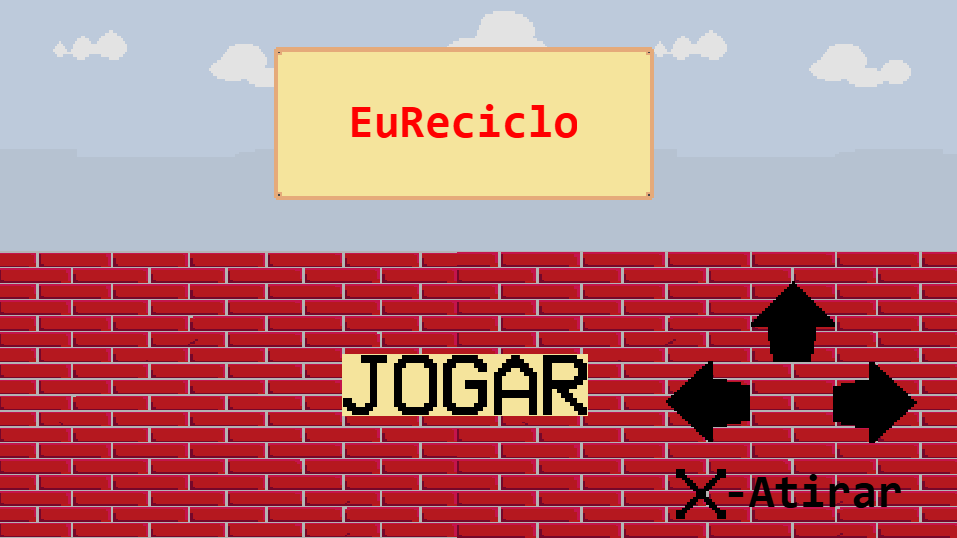
Além do Silêncio por Esther
Acesse o jogo com este link: Além do Silêncio
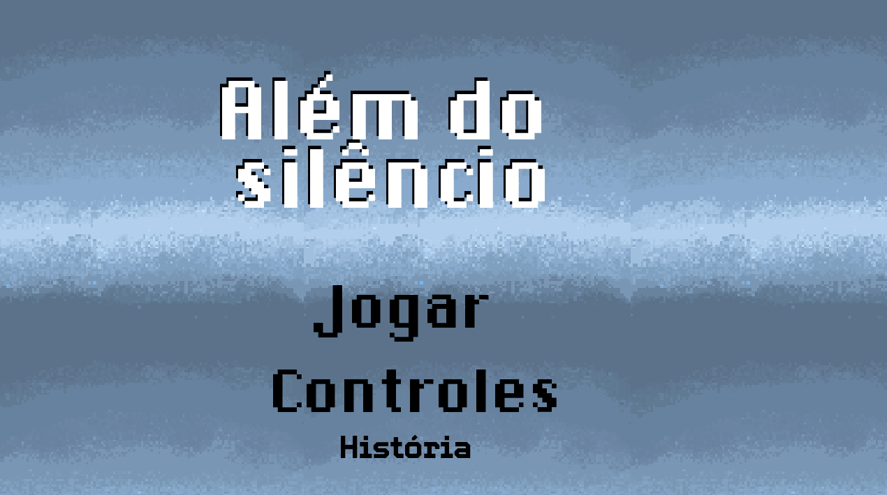
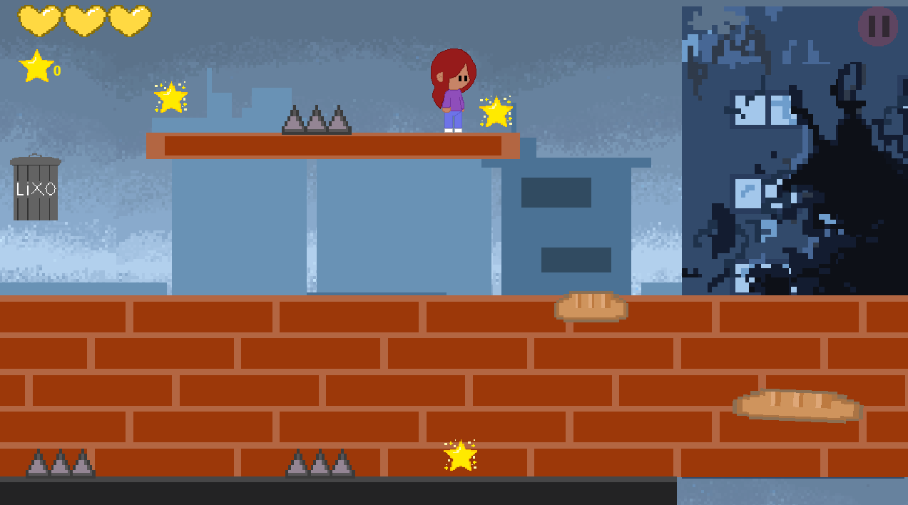
História - Além do Silêncio
Após sobreviver a uma explosão que o deixou surdo, Ariel enfrenta traumas, depressão e o afastamento dos amigos. Dois meses depois, incapaz de aceitar sua nova realidade, ele desperta em um lugar misterioso. Agora, precisará enfrentar criaturas, superar desafios e confrontar seus próprios medos em uma jornada de autoconhecimento, buscando forças para continuar vivendo e encontrar a si mesmo.
Salvando a Natureza
Acesse o jogo com este link: Salvando a Natureza
Nesse jogo você vai aprender onde descartar cada tipo de resíduo na lixeira correta durante o caminho para salvar a Terra.
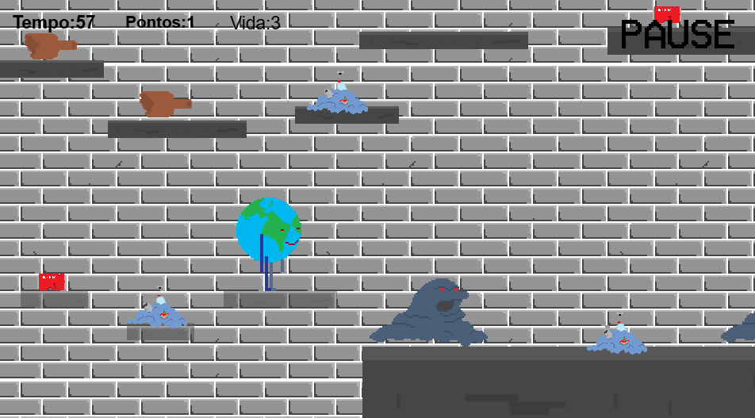
Maga HangugeO por Marcella
Acesse o jogo com este link: Maga HangugeO
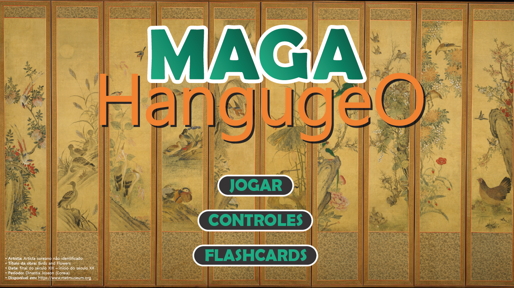
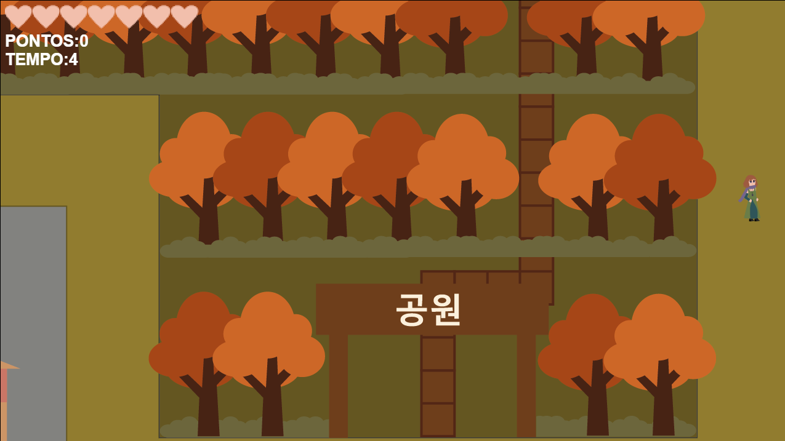
História - Maga HangugeO
Uma garota viaja pela cidade de Seul vai decobrindo vários pontos turísticos pela capital da Coréia do Sul e ao mesmo tempo ela aprende o idioma.
Asa Negra por Kauan
Acesse o jogo com este link: Asa Negra
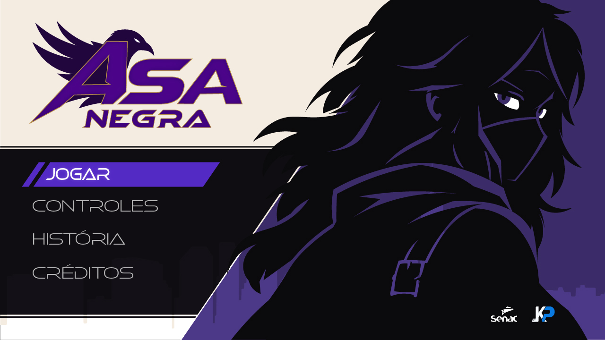
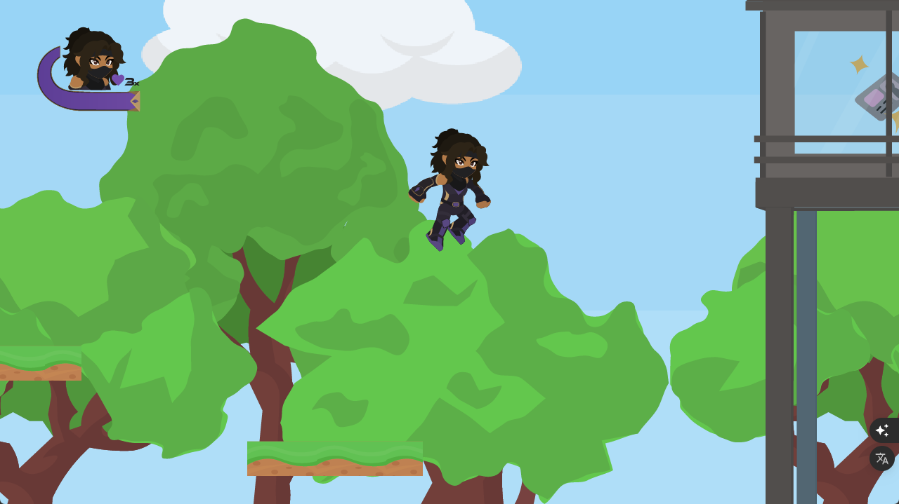
História - Asa Negra
Na cidade, acontecimentos estranhos começam a surgir após uma série de experimentos realizados em segredo. Por trás deles está Shawn Bradley, um cientista que acredita que seus experimentos podem mudar a humanidade e criar um futuro melhor.
Naomi, uma jovem com habilidades relacionadas aos corvos, descobre o que Shawn está fazendo e percebe que seus métodos podem colocar muitas pessoas em perigo. Por isso, decide impedir seus planos.
Porém, Shawn não está sozinho. Zane, um dos melhores amigos de Naomi, acredita nos ideais do cientista e decide se juntar a ele. Para Zane, os experimentos de Shawn representam uma oportunidade de construir um futuro diferente e alcançar algo maior.
Naomi pensa o contrário. Para ela, nenhum ideal justifica colocar outras pessoas em risco.
A diferença entre suas visões faz com que os dois amigos acabem em lados opostos. O que antes era uma amizade agora se transforma em um conflito entre dois ideais: seguir em frente a qualquer custo ou lutar para impedir que outros sejam sacrificados pelo caminho.
Enquanto Naomi avança pelo laboratório, ela precisa enfrentar os aliados de Shawn e, principalmente, Zane. Cada confronto faz com que o conflito entre os antigos amigos se torne ainda mais intenso.
Agora, Naomi precisa chegar até Shawn, impedir seus experimentos e provar que seus ideais não precisam custar a vida ou a liberdade de outras pessoas.
Às vezes, o maior desafio não é enfrentar um inimigo, mas enfrentar alguém que um dia esteve ao seu lado.
R'evolução
Acesse o jogo com este link: R'evolução
Nesse jogo você vai aprender onde descartar cada tipo de resíduo na lixeira correta durante o caminho para salvar a Terra.
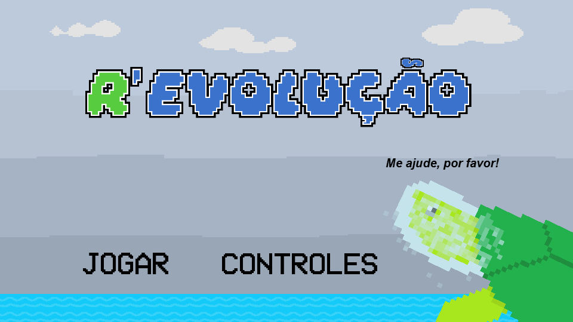
Descobrindo o Tupi por Steffahny
Acesse o jogo com este link: Descobrindo o Tupi
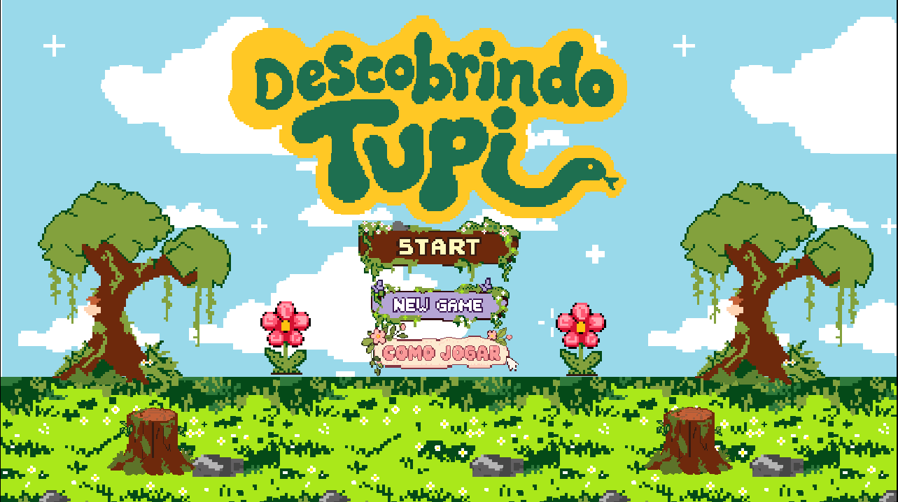
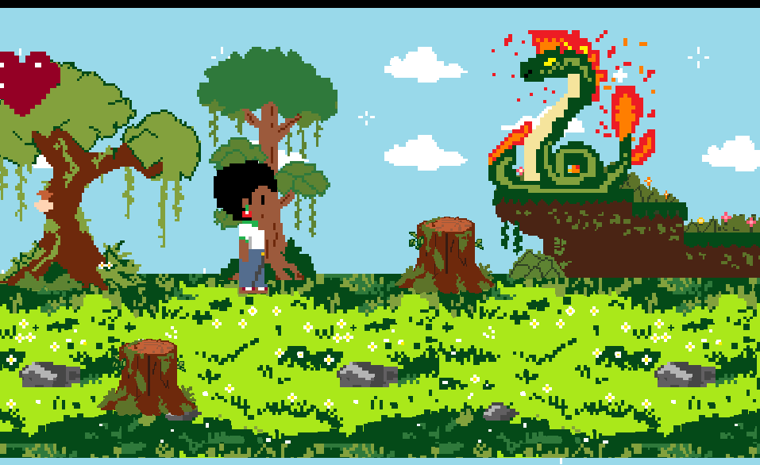
História - Descobrindo o Tupi
Descobrindo o Tupi é um jogo educativo de plataforma que tem como objetivo apresentar palavras de origem tupi de forma divertida e interativa. A protagonista, Iara, é uma jovem curiosa que deseja aprender mais sobre a língua tupi. Durante sua aventura, ela explora uma floresta, percorre plataformas, pula obstáculos e enfrenta pequenos inimigos. Ao encontrar determinados elementos da natureza no cenário, como água, árvores, pedras, fogo e flores, o jogador pode clicar sobre eles para descobrir seus nomes na língua tupi. Ao clicar em um elemento, uma janela é exibida na tela apresentando o nome do objeto em português, sua tradução para o tupi e uma dica de pronúncia. Depois de visualizar a informação, o jogador pode fechar a janela e continuar a exploração. Durante a aventura, Iara também responde perguntas relacionadas às palavras em tupi que aprendeu. Quando erra uma pergunta, ela poderá ter uma nova oportunidade de respondê-la na repescagem que acontece antes da batalha final. O objetivo principal é chegar ao final da fase, superando os obstáculos e inimigos, aprendendo novas palavras relacionadas à natureza e à língua tupi e respondendo às perguntas. Antes da batalha final, Iara participa de uma repescagem das perguntas que errou, podendo recuperar corações ao acertá-las.
Colheita Reciclável
Acesse o jogo com este link: Colheita Reciclável
Nesse jogo você vai aprender onde descartar cada tipo de resíduo na lixeira correta durante o caminho para salvar a Terra.
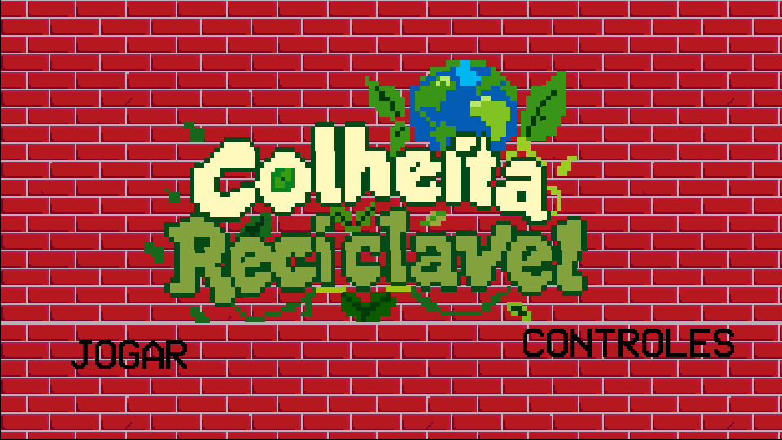
O Interior por Gregory
Acesse o jogo com este link: O Interior
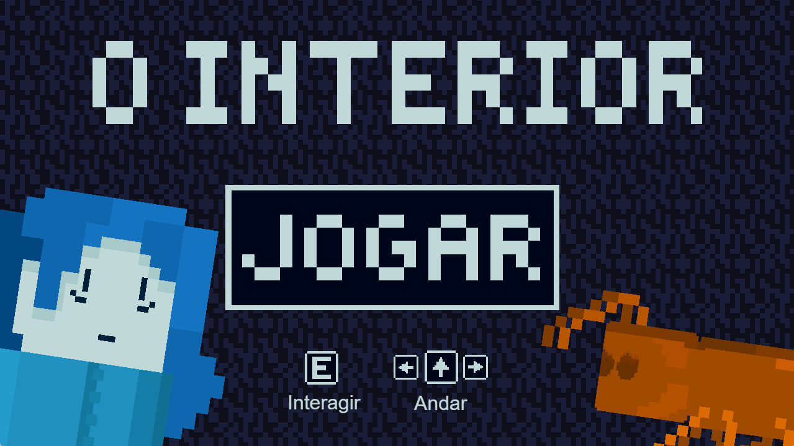
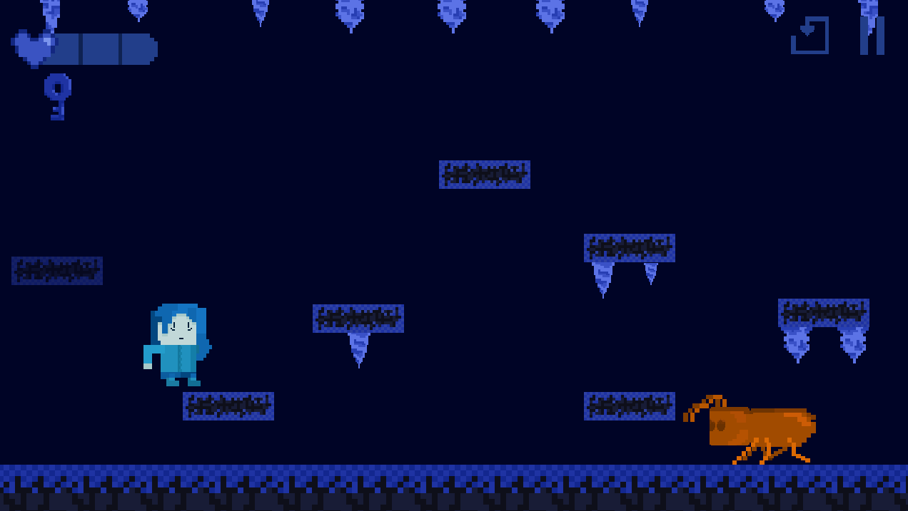
História - O Interior
I.E. está em uma crise existencial. Conforme anda pelo ambiente em que está, a personagem enfrenta desafios para conseguir avançar. Cada obstáculo encontrado representa a dificuldade que ela carrega consigo para superar sua situação-problema. Ao explorar esse espaço, I.E. é levada a refletir sobre seus sentimentos, entendimentos e sobre aquilo que realmente está enfrentando. Conforme avança, os desafios se tornam cada vez mais difíceis, fazendo com que ela precise olhar para dentro de si mesma. Ao passar pelos obstáculos de sua própria mente, I.E. entende que, para enfrentar seu problema de verdade, precisa primeiro reconhecer aquilo que sente, sem reprimi-lo.
Reutilize
Acesse o jogo com este link: Reutilize
Nesse jogo você vai aprender onde descartar cada tipo de resíduo na lixeira correta durante o caminho para salvar a Terra.
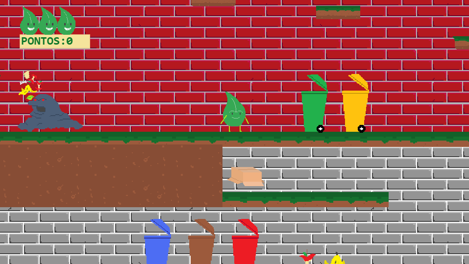
Nagaz: Destino Manifesto por Naga
Acesse o jogo com este link: Nagaz: Destino Manifesto
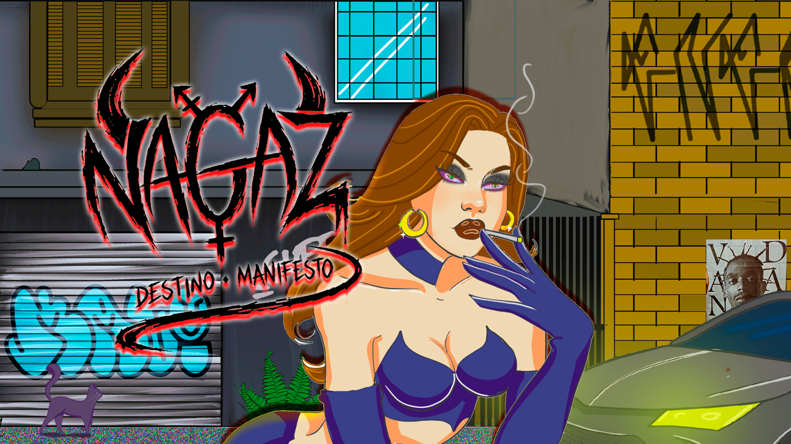
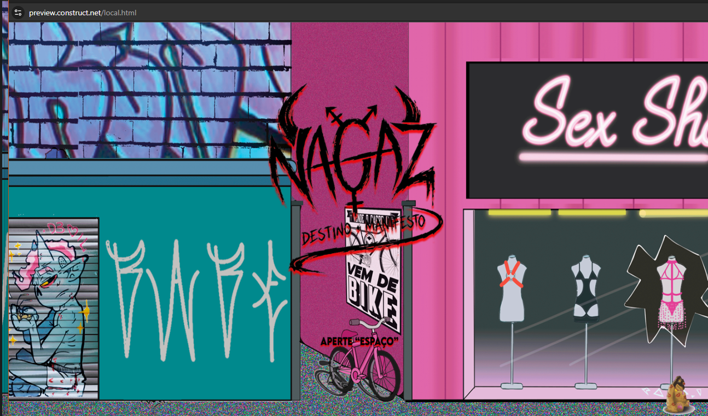
História - Nagaz: Destino Manifesto
É um jogo de ação beat 'em up de combate protagonizado por Nagazaki, uma rebelde que enfrenta a elite dos bons costumes em uma sociedade marcada pela hipocrisia e pela corrupção. Longe de ser um exemplo de virtude, Nagazaki assume o papel de justiceira e parte para cima de poderosos que manipulam a sociedade e ameaçam a sua liberdade.
Em busca da Terra
Acesse o jogo com este link: L.UP
Nesse jogo você vai aprender onde descartar cada tipo de resíduo na lixeira correta durante o caminho para salvar a Terra.
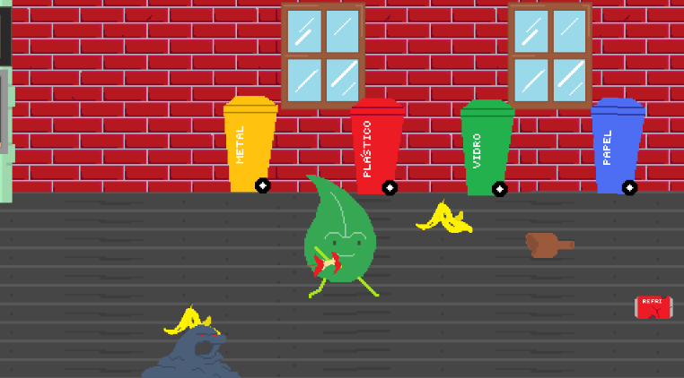
Star of Rest por Julia
Acesse o jogo com este link: Star of Rest
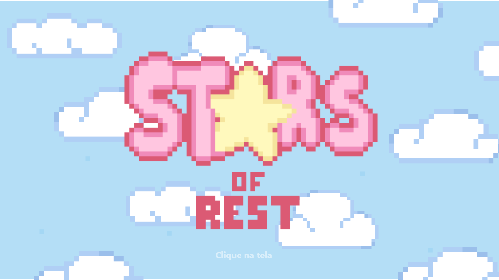
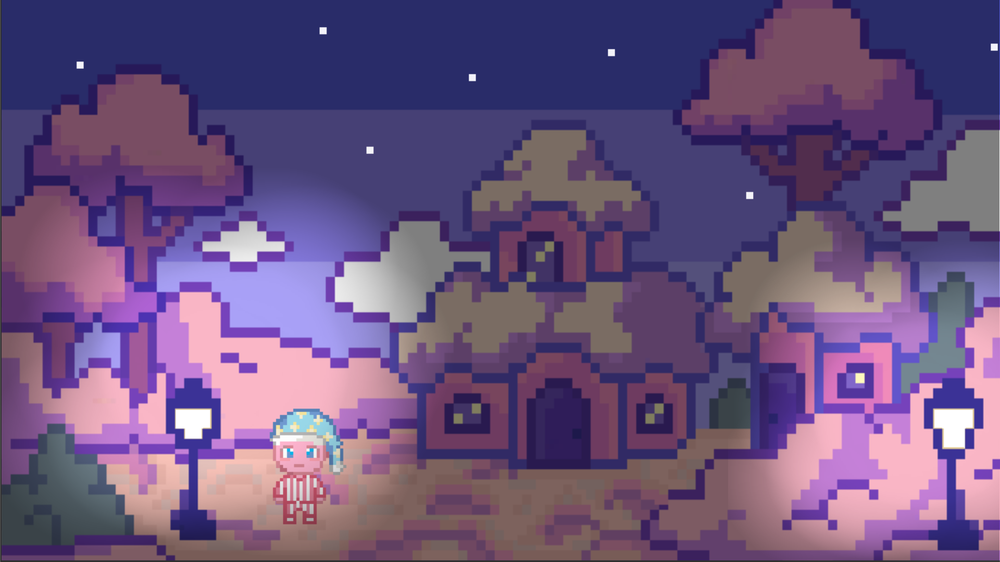
História - Star of Rest
Em um reino formado por nuvens, estrelas e luas brilhantes, as Estrelas do Descanso começaram a perder o brilho porque os habitantes estão dormindo mal. O jogador acompanha Lumi, uma pequena criatura das nuvens, em uma jornada para restaurar o brilho do céu ajudando personagens a desenvolver hábitos saudáveis antes de dormir.
Projeto Atlas por Israel
Acesse o jogo com este link: Projeto Atlas
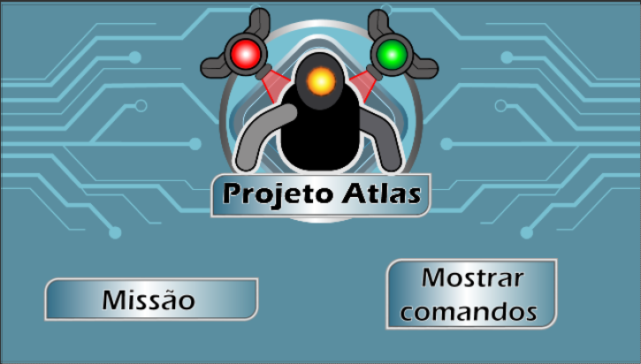
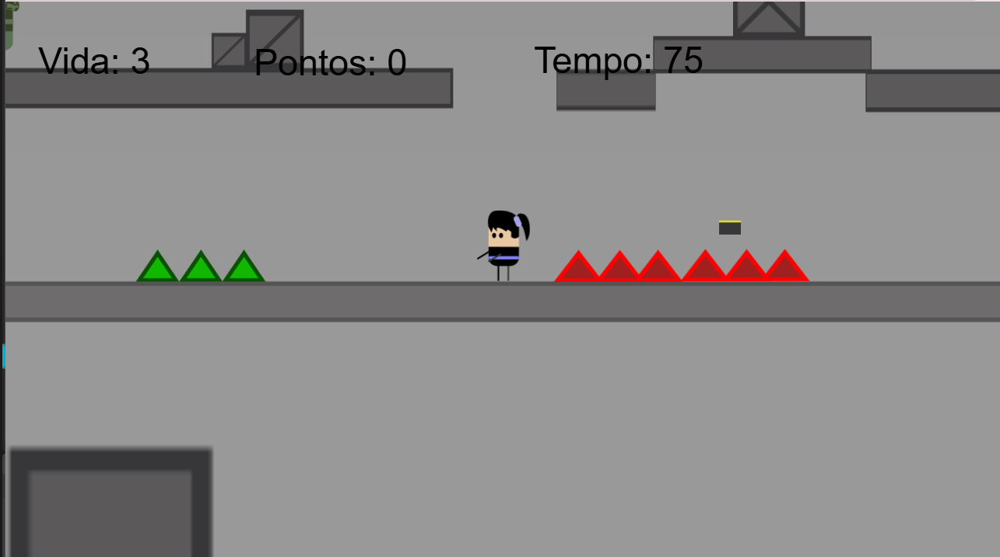
História - Projeto Atlas
Em um reino distante, onde os rios fluíam com chocolate der- retido e as montanhas eram feitas de algodão doce, existia um lugar mágico conhecido como Caramelândia. No coração da Caramelândia vivia uma jovem chamada Mindy, uma linda princesa e supertalentosa que tinha um dom especial para criar os mais deliciosos doces do mundo. No entanto, nem todos em Caramelândia eram tão gentis quanto Mindy. Dois vilões, os irmãos Gula e Gelo, cobiçavam o poder sobre todo o mundo dos doces. Gula, um gigante obeso com uma voracidade insaciável, desejava devorar e comandar tudo em seu caminho, enquanto Gelo, uma mulher de gelo com um coração frio, queria congelar o reino inteiro para que ela pudesse reinar sobre as terras geladas.
5'Rs Arena
Acesse o jogo com este link: 5'Rs Arena
Nesse jogo você vai aprender onde descartar cada tipo de resíduo na lixeira correta durante o caminho para salvar a Terra.

Próxima Estação por Natali
Acesse o jogo com este link: Próxima Estação
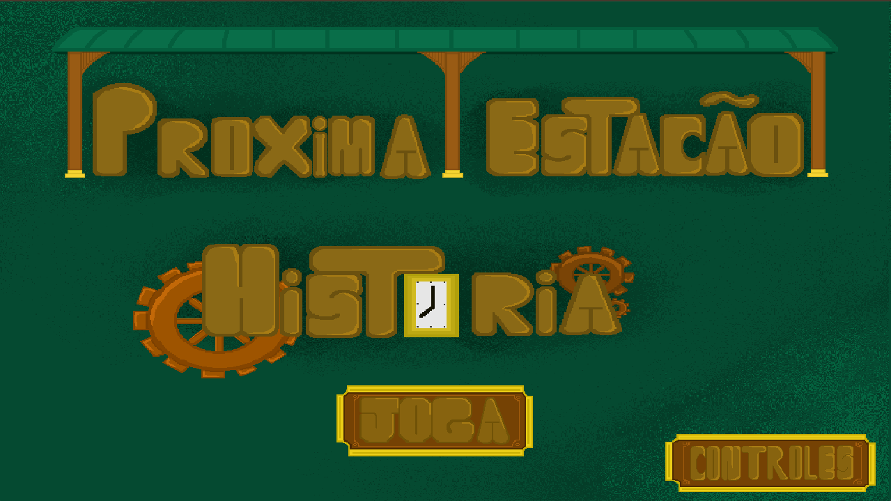
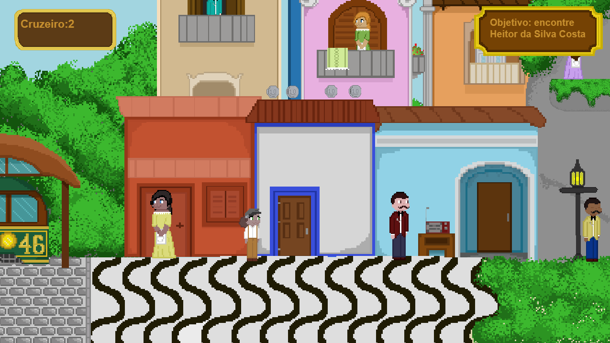
História - Próxima Estação
Você é uma menina viajante do tempo que viaja na história do Brasil falando com as pessoas de cada época que vai falar sobre curiosidades da época. Além de cenários caracterizados da época. A sua máquina do tempo e um bondinho, Que te deixa em várias estações.
Missão: Salve a Terra
Acesse o jogo com este link: Missão: Salve a Terra
Nesse jogo você vai aprender onde descartar cada tipo de resíduo na lixeira correta durante o caminho para salvar a Terra.
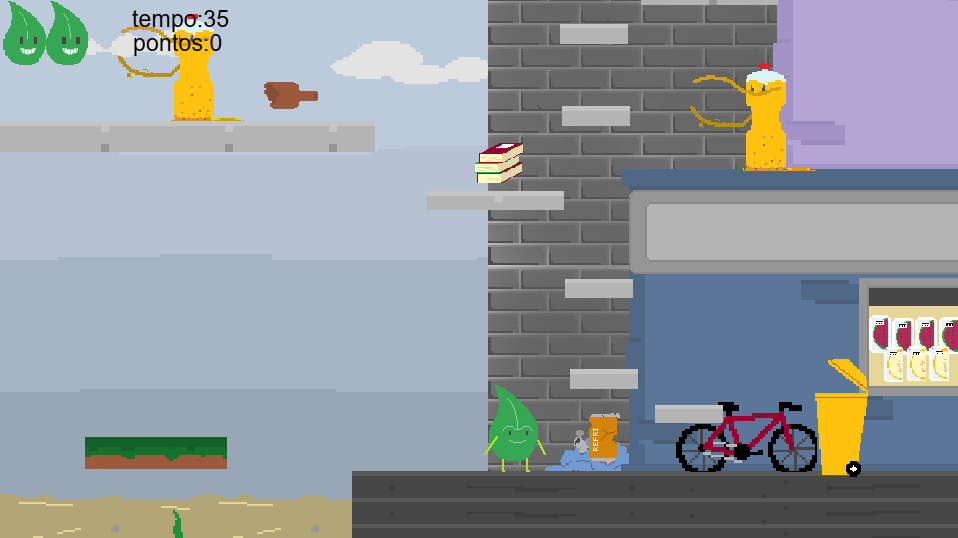
Segredos das Aves por Yasmin
Acesse o jogo com este link: Segredos das Aves
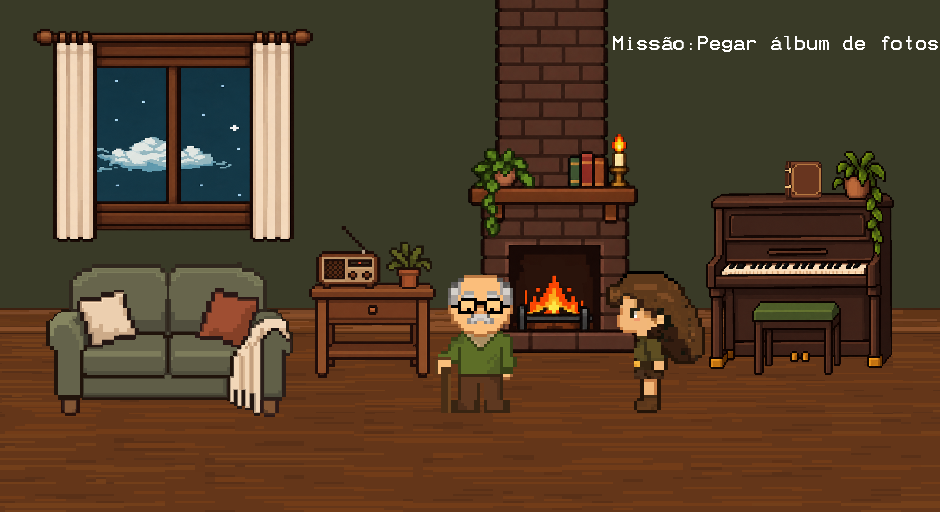
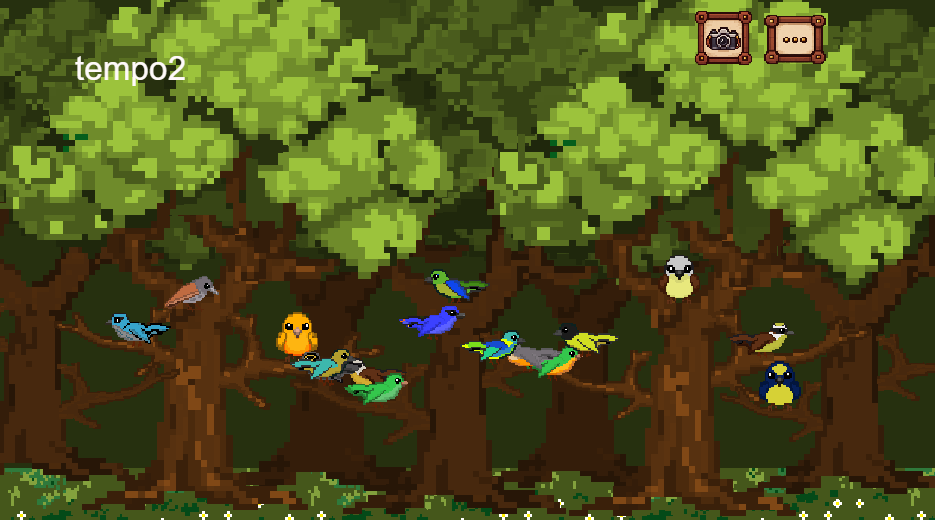
História - Segredos das Aves
Segredo das Aves é um jogo de aventura e exploração inspirado no folclore brasileiro. Nele, a protagonista Ana segue os passos de seu avô, Antônio, em uma missão para encontrar três aves lendárias: o Urutau, o Uirapuru e a Matinta-Pereira. Durante a jornada, o jogador explora a floresta, fotografa diferentes pássaros e monta seu próprio álbum de fotos. O jogo mistura exploração, fotografia e lendas brasileiras, permitindo conhecer mais sobre a natureza e a cultura do nosso país.
Faça sua Parte
Acesse o jogo com este link: Faça sua Parte
Nesse jogo você vai aprender onde descartar cada tipo de resíduo na lixeira correta durante o caminho para salvar a Terra.
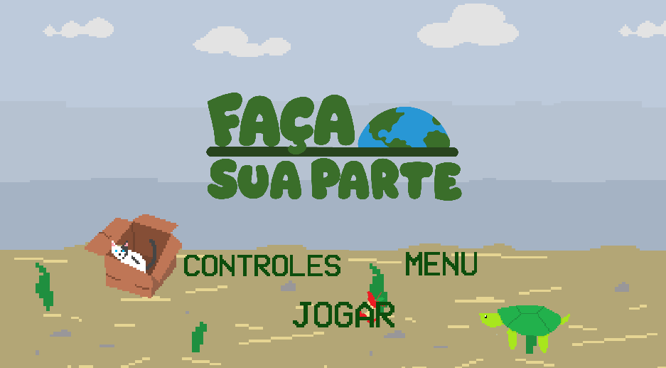
Mac: Reino Imune por Laura
Acesse o jogo com este link: Mac: Reino Imune
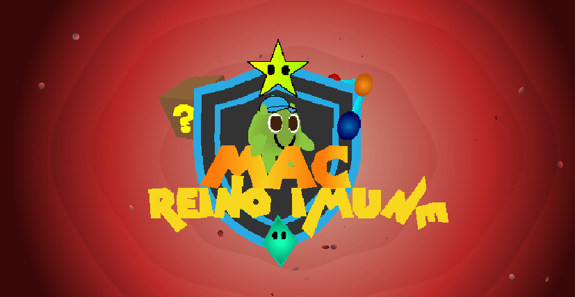
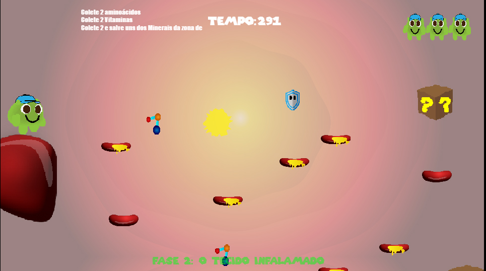
História - Mac: Reino Imune
Mac, Reino Imune é um jogo que combina ação, comédia e biologia de forma educativa. No controle um macrófago, o jogador precisa cruzar o interior do corpo humano, passando pela corrente sanguínea e tecidos inflamados, para conter uma invasão bacteriana após uma ferida na pele. Ao longo da jornada, Mac absorve nutrientes e utiliza transformações temporárias baseadas nas células do sistema imunológico (como velocidade e invencibilidade) para superar obstáculos, combater inimigos e coletar a Plaqueta de Ouro para fechar o corte e salvar o organismo.
Em busca da Terra
Acesse o jogo com este link: L.UP
Nesse jogo você vai aprender onde descartar cada tipo de resíduo na lixeira correta durante o caminho para salvar a Terra.